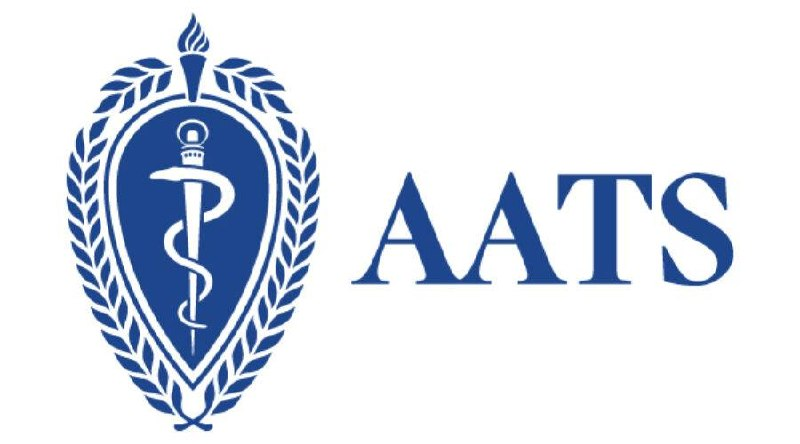

operation field. Only one field is required — all others default to lowest-risk values.operation is required. All other variables default to lowest-risk: binary fields → "no", procedure-specific factors → "missing", age → 10 days. Enables rapid triage with partial data.| PERCENTILE | RISK LEVEL | ACTION |
| 0–50th | Below average | Standard protocols |
| 50–75th | Average | Standard protocols |
| 75–90th | Above average | Enhanced monitoring |
| 90–95th | High | Risk modification |
| >95th | Very High 🔴 | Comprehensive optimization |
Risk calculators for every thoracic surgery patient population